Quase todo mundo que começa a gerar imagens com IA esbarra no mesmo muro: as imagens até são bonitas, mas não parecem de ninguém. Cada uma tem uma luz, uma paleta, um enquadramento — e, postadas lado a lado, parecem tiradas por dez pessoas diferentes. O problema não é a ferramenta. É que as decisões visuais estão sendo tomadas ao acaso — ou, pior, pelo próprio modelo.
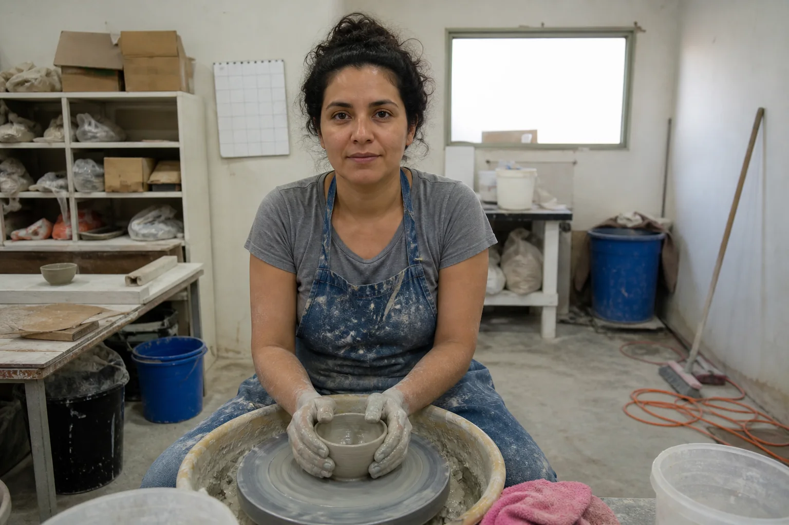
Prompt usado
Ordinary unconsidered smartphone snapshot inside a small ceramics studio in Cunha, Brazil. A Brazilian woman ceramist in her 30s with light-brown skin and dark wavy hair in a loose bun, wearing a clay-stained grey t-shirt and a denim apron, sits at a pottery wheel shaping a small bowl. She is placed dead center, the camera is at standing eye level pointing slightly down. Flat overhead fluorescent tube light, cool greenish 5500K cast, no direction, no shadows. Cluttered background: plastic buckets, a mop, a calendar on the wall, cardboard boxes, a window blown out to white. Colors random and unrelated: a bright blue bucket, an orange extension cord, a pink towel. Nothing is happening yet, her hands rest still on the clay. Casual, neutral, forgettable photo, no stylization. No brand names, logos or readable printed text anywhere: plain unmarked cardboard boxes, blank calendar, unbranded buckets.
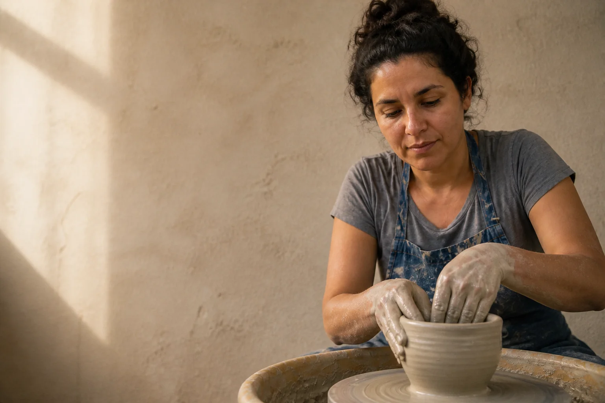
Instrução de edição usada (sobre a imagem-base)
Apply four deliberate decisions at once to this scene: 1) LIGHT — soft late-afternoon window light from the left, warm 3500K, shadows falling to the right; 2) COLOR — a restrained earthy palette of terracotta, raw clay beige, warm grey and off-white, no bright plastic colors; 3) COMPOSITION — low camera at wheel height, woman on the right third, spinning clay in the foreground, plain plaster wall as negative space on the left, no clutter; 4) MOMENT — the peak of the gesture, wet hands pulling up the wall of the bowl, slip dripping, eyes on the rim. Keep the same woman, face, hair, t-shirt and denim apron. Documentary photography with subtle film grain.
A mesma ceramista, no mesmo ateliê. A da direita é uma edição da da esquerda: mudaram só a luz (janela lateral quente), a cor (paleta terrosa), a composição (câmera baixa, espaço negativo) e o momento (o gesto no auge). Ninguém ficou “mais talentoso” entre uma e outra — foram tomadas quatro decisões que dá para nomear, aprender e repetir. Este módulo é sobre isso.
A ideia central do curso inteiro cabe numa frase: gosto é um conjunto de decisões que você repete de propósito. E, como qualquer conjunto de decisões, se aprende. Não se aprende rolando o feed por mais horas — se aprende com um método: coletar, encontrar padrões, nomear e recriar. No fim, você terá começado o seu caderno de olhar, o projeto que atravessa todos os módulos.
1O que é gosto (e o que ele não é)
O que é
Quando alguém diz que uma pessoa “tem bom gosto”, parece falar de um dom. Olhando de perto, é outra coisa: essa pessoa viu muita coisa com atenção (repertório), sabe dizer o que viu (vocabulário) e já tentou fazer muitas vezes (prática). As três partes se alimentam: quem tem vocabulário enxerga mais; quem pratica descobre o que o vocabulário ainda não cobre.
Por que aprender
A diferença entre “conteúdo de IA” e direção criativa não é técnica de prompt: é intenção. Quem produz imagens aleatórias toma decisões aleatórias. Quem cura repete a mesma linguagem visual de propósito, sabe explicar o porquê de cada escolha e deixa essa linguagem amadurecer com o tempo. Um cliente não paga por uma imagem bonita — ele paga por uma série de imagens que parecem pertencer à mesma marca.
Conceitos-chave em ação
✓ Curadoria (gosto em ação)
- Mesma família de luz em toda a série (ex.: lateral, quente, suave)
- Paleta com 3–4 cores que se repetem
- Um hábito de composição reconhecível (ex.: sujeito num terço, muito espaço vazio)
- Consegue explicar cada escolha em uma frase
✗ Aleatoriedade (gosto terceirizado)
- Cada imagem com uma luz diferente, “porque ficou legal”
- Paleta que muda conforme o prompt do dia
- Sujeito sempre no centro, porque foi onde o modelo pôs
- “Não sei, gostei” como única justificativa
2Uma decisão de cada vez: luz, cor, composição, momento
O que é
Treinar o olho começa por isolar variáveis. Em vez de comparar duas fotos que diferem em tudo, pegue uma imagem e mude uma coisa. Você vai fazer isso o curso inteiro. As quatro decisões que mais separam uma imagem comum de uma pensada são:
| Decisão | Pergunta que o diretor faz | Vocabulário para o prompt |
|---|---|---|
| Luz | De onde vem, é dura ou suave, qual a cor? | soft window light from the left, warm 3500K, shadows falling right |
| Cor | Quais 3–4 cores mandam? Alguma está sobrando? | restrained earthy palette: terracotta, raw clay beige, warm grey |
| Composição | Onde está o sujeito? O que ficou de fora? Onde o olho descansa? | subject on the right third, negative space on the left, low camera |
| Momento | Este é o instante mais expressivo da ação? | peak of the gesture, hands pulling up the clay, slip dripping |
Por que aprender
Quando as quatro mudam ao mesmo tempo, você só percebe que “ficou melhor”. Quando mudam uma de cada vez, você descobre qual delas carrega o peso naquela cena — e passa a pedi-la de propósito. Veja a base do topo do módulo editada quatro vezes, cada edição mudando só uma decisão:
Conceitos-chave em ação
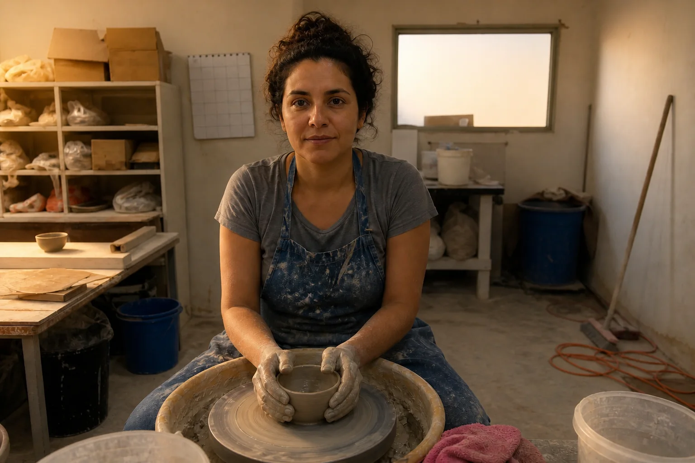
Instrução de edição usada (sobre a imagem-base)
Change ONLY the lighting: turn off the overhead fluorescent light and light the scene with low, soft late-afternoon window light coming from the left, warm around 3500K, falling across her hands and the clay, leaving the right side of her face and the background in gentle shadow. Keep the same woman, same clothes, same pose, same framing, same background objects and their colors.
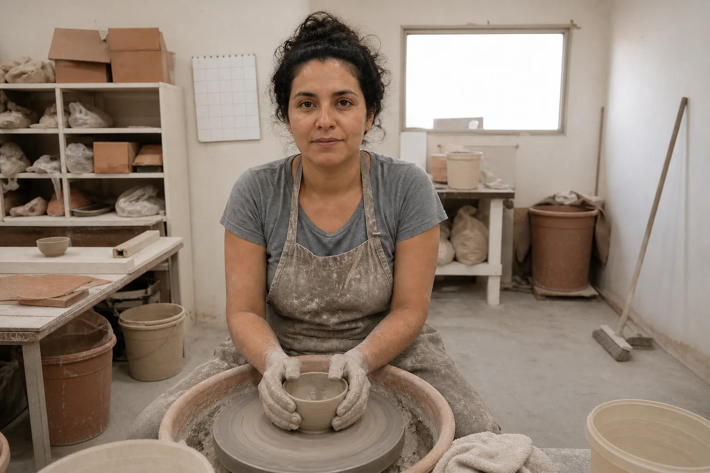
Instrução de edição usada (sobre a imagem-base)
Change ONLY the color palette: make every object in the scene belong to one restrained earthy palette of terracotta, raw clay beige, warm grey and off-white. Replace the bright blue bucket, orange cord and pink towel with objects in those same earthy tones. Keep the same flat overhead light, same woman, same pose, same framing and same object positions.
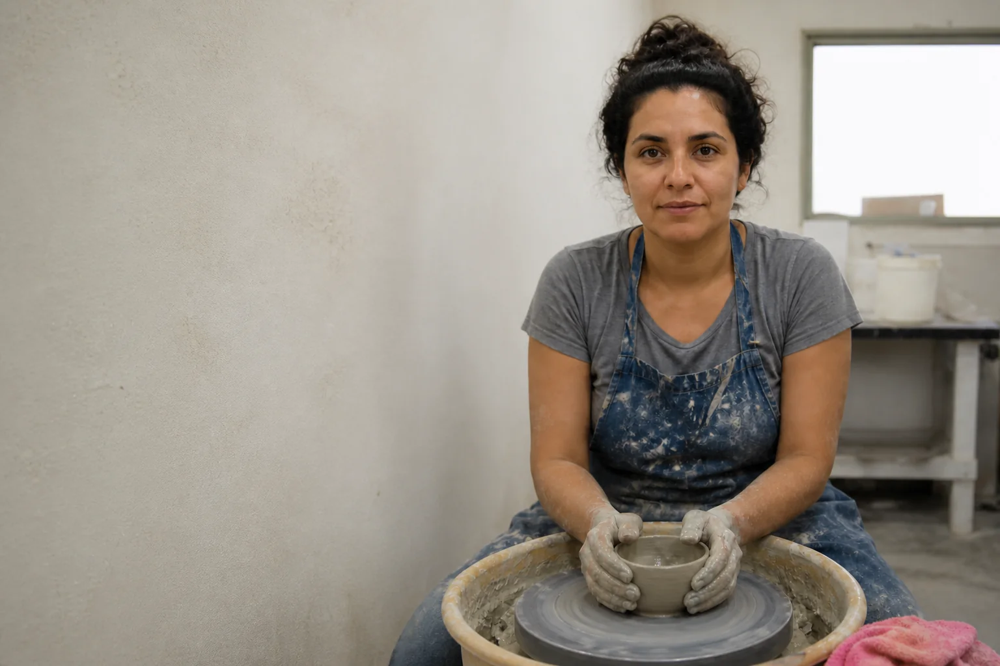
Instrução de edição usada (sobre a imagem-base)
Change ONLY the composition: re-frame from a low seated height at the level of the wheel, placing the woman on the right third of the frame and the spinning clay in the foreground, with clean negative space on the left where the plain plaster wall is visible. Remove the clutter from the frame by choosing a tighter angle. Keep the same flat overhead fluorescent light, same woman, same clothes and same colors of what remains visible.
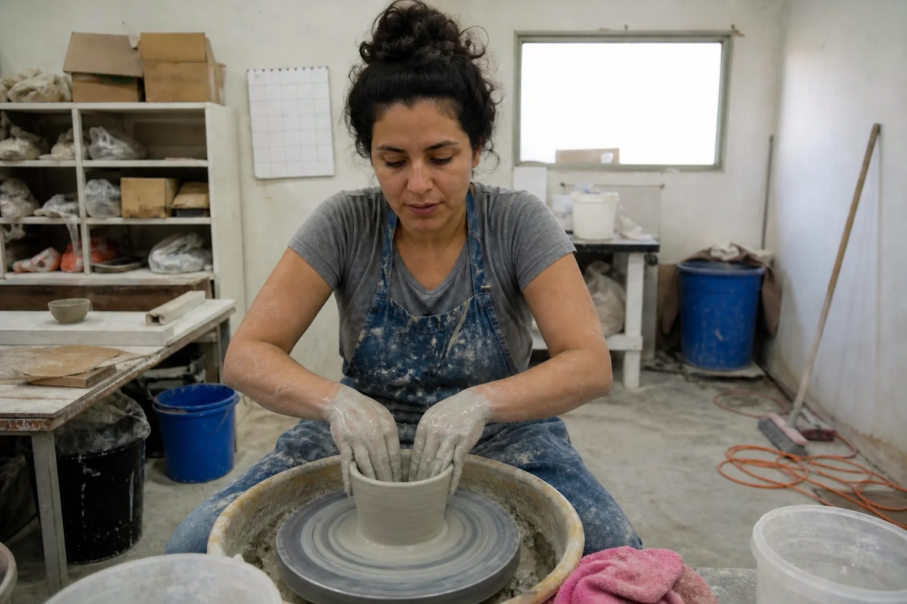
Instrução de edição usada (sobre a imagem-base)
Change ONLY the moment: capture the peak of the action instead of a pause — her wet hands are pulling up the wall of the spinning bowl, clay slip dripping between her fingers, a few droplets flying, her eyes locked on the rim in concentration. Keep the same flat overhead fluorescent light, same centered framing, same background clutter and colors.
Quatro edições independentes da mesma imagem comum. Luz: a luz quente de janela entra pela esquerda, dá volume ao rosto e às mãos e esquenta o ateliê inteiro — a bagunça continua lá, só que menos gritante. Cor: baldes, pano e fio viram terracota e bege, e os objetos passam a conversar entre si. Composição: um quadro mais fechado tira a bagunça de cena, põe a ceramista no terço direito e deixa a parede lisa como espaço vazio à esquerda. Momento: a ação vira o assunto. Abra “Prompt usado” de cada uma: todas dizem “mude SÓ isto”.
3Passo 1 — Coletar como diretor, não como plateia
O que é
A primeira mudança é de postura. Rolar o feed é consumo; coletar é trabalho. Você está guardando ativos — imagens que vai estudar, desmontar e recriar — e não pequenas doses de inspiração que somem em cinco minutos. A meta inicial é 20 a 30 referências fortes; depois, 5 novas por dia, todo dia.
Por que aprender
Referência boa é aquela que provoca uma reação forte — parece premium, emocional ou muito “sua” — e que dá para explicar depois. Por isso, colete com três perguntas na cabeça: isto me para no scroll? consigo dizer por quê? eu gostaria de ter feito isto? Duas respostas “sim” já justificam guardar.
✓ Entra no board
- Imagens de fora do seu nicho que resolvem bem luz, cor ou composição
- Frames de filme, capas de disco, vitrines, pinturas, fotos de rua
- Referências que você ainda não sabe explicar, mas que te pararam
✗ Fica de fora
- Imagem “legal” que se parece com todas as outras do feed
- Tudo de uma única fonte (só IA, só um fotógrafo)
- Mais de 5 por dia “para adiantar”: vira acúmulo, não curadoria
Conceitos-chave em ação
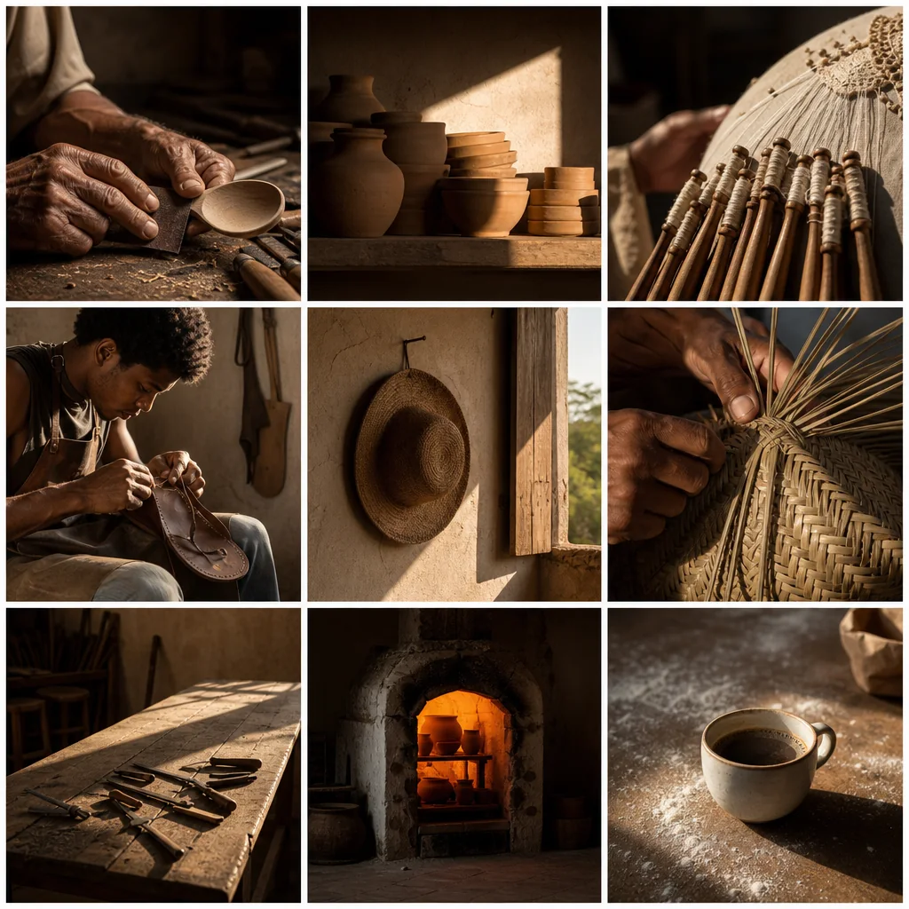
Prompt usado
A photographic moodboard laid out as a clean 3x3 grid of nine separate square photographs with thin white gutters, on a white background. Theme: 'late afternoon in Brazilian craft workshops'. The nine photos share one visual language — warm low side light around 3000-3500K, earthy palette of terracotta, ochre, raw wood and off-white, matte textures, lots of shadow, one clear subject each, asymmetrical framing with negative space. Photos: 1) hands of an old woodcarver sanding a wooden spoon; 2) stacked unglazed clay pots on a shelf with a beam of sun; 3) a lace-maker's bobbins on a cushion in Ceará, close-up; 4) a young Black leatherworker stitching a sandal, side-lit; 5) a dusty straw hat hanging on a nail next to a window; 6) a basket weaver's fingers braiding palm fiber; 7) an empty workbench with tools and a long shadow; 8) a potter's kiln glowing orange in a dim room; 9) a cup of coffee on a flour-dusted table in raking light. No text, no logos.
Um board-tema gerado como exemplo: “fim de tarde em ateliês brasileiros”. Nove imagens de assuntos diferentes — entalhe, barro, renda de bilro, couro, palha, forno — que você vai usar no próximo tópico para treinar a leitura de padrões. Na vida real, seu board terá fotos de muitas fontes; aqui geramos um para poder mostrar o prompt.
4Passo 2 — Encontrar padrões: o board é um conjunto de dados
O que é
Pare de olhar o board como colagem e passe a olhá-lo como dados. Afaste o zoom, veja tudo de uma vez e pergunte: o que se repete? Você não está procurando o que cada imagem mostra (o assunto), e sim como elas mostram. Os padrões aparecem em cinco lugares:
Checklist de leitura do board
| Camada | O que procurar | Exemplos de padrão |
|---|---|---|
| Cor | cores dominantes, saturação, quente × fria | terrosa e dessaturada; azul-acinzentada com um acento quente |
| Luz | direção, dureza, horário, contraste | lateral baixa de fim de tarde; névoa suave; recorte de neon |
| Textura | fosco, brilhante, granulado, limpo | grão de filme; superfícies foscas; nada plástico |
| Composição | centro ou assimetria, quanto vazio, altura da câmera | sujeito num terço e muito espaço negativo |
| Clima | a emoção que sobra quando você fecha os olhos | calma e dignidade; tensão urbana; nostalgia |
Por que aprender
Duas a quatro repetições bastam para formar uma direção estética. Mais do que isso e você está listando tudo; menos, e ainda não há padrão. Esse pequeno conjunto é o que você vai escrever nos prompts e defender na frente de um cliente.
Conceitos-chave em ação
O board dos ateliês lido como dados. Ignore o assunto (colher, potes, bilros, chapéu, forno) e conte o como: em quase todos os nove quadros a luz entra de um lado só, baixa e quente, e deixa o resto em sombra; a paleta fica em madeira, barro e ocre — o único verde é a mata atrás da janela; o assunto quase nunca está no centro; e só um quadro mostra um rosto, olhando para baixo, para o trabalho. Essas repetições são a direção resolvida logo abaixo.
Exemplo resolvido: o board dos ateliês
- Luz: em quase todas, uma única fonte lateral e baixa, quente (fim de tarde, janela), com muita sombra ao redor.
- Cor: paleta terrosa — terracota, ocre, madeira crua, branco sujo. Nenhum azul ou verde saturado.
- Composição: um assunto claro por imagem, fora do centro, com áreas vazias de sombra ou parede.
- Clima: atenção e silêncio; mãos trabalhando, ninguém olhando para a câmera.
- Direção em uma linha: “ofício em luz lateral quente, paleta terrosa, muito espaço de sombra, sem pose”.
5Passo 3 — Nomear: gosto vira linguagem
O que é
Um bom prompt não é só a descrição do que está na cena — é o seu gosto escrito como decisões. A diferença aparece quando você compara um pedido vago com um pedido nomeado:
✓ Decisões nomeadas
- muted blue-gray palette, matte textures, soft haze
- warm low side light from the left, 3500K, long soft shadows
- asymmetrical composition, subject on the left third
- 35mm lens, subtle film grain, gritty editorial mood
✗ Adjetivos que não decidem nada
- cinematic lighting
- beautiful colors
- nice composition
- aesthetic, high quality, masterpiece
Por que aprender
Quando a direção do seu board vira um parágrafo fixo — um bloco de estilo — você ganha consistência de graça: troca o assunto e mantém o bloco. É assim que uma série de imagens passa a parecer da mesma pessoa. O vocabulário completo (a biblioteca de palavras visuais) é o assunto do módulo 1-2; aqui, o importante é o hábito de escrever decisões em vez de adjetivos.
Conceitos-chave em ação
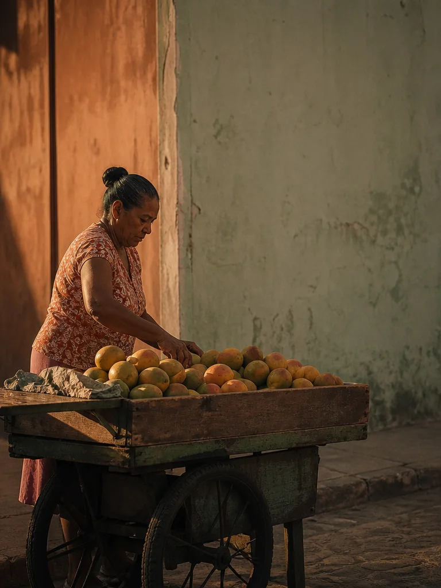
Prompt usado
Vertical photo of a street vendor in her 50s arranging mangoes in a wooden cart on a quiet street in Recife at 5 pm. STYLE BLOCK: muted terracotta and sage palette, warm low side light from the left at 3500K, soft long shadows, matte textures, subject on the left third with plain wall as negative space on the right, 50mm lens at f/2.8, subtle 35mm film grain, calm and dignified documentary mood. No text, signs or street plates anywhere.
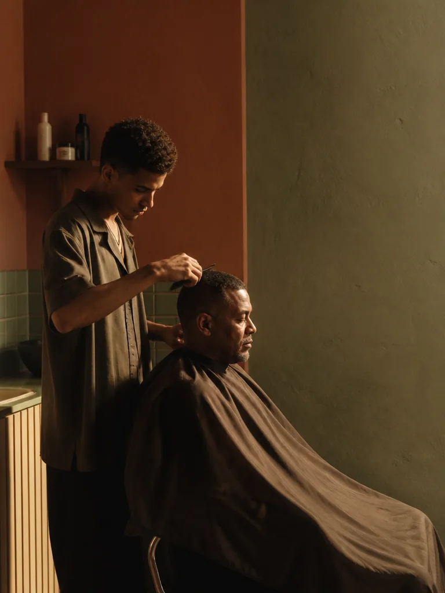
Prompt usado
Vertical photo of a young barber cutting a customer's hair in a tiny barbershop in Salvador, the customer wrapped in a cape. STYLE BLOCK: muted terracotta and sage palette, warm low side light from the left at 3500K, soft long shadows, matte textures, subject on the left third with plain wall as negative space on the right, 50mm lens at f/2.8, subtle 35mm film grain, calm and dignified documentary mood. No text, signs, posters or brand labels anywhere.
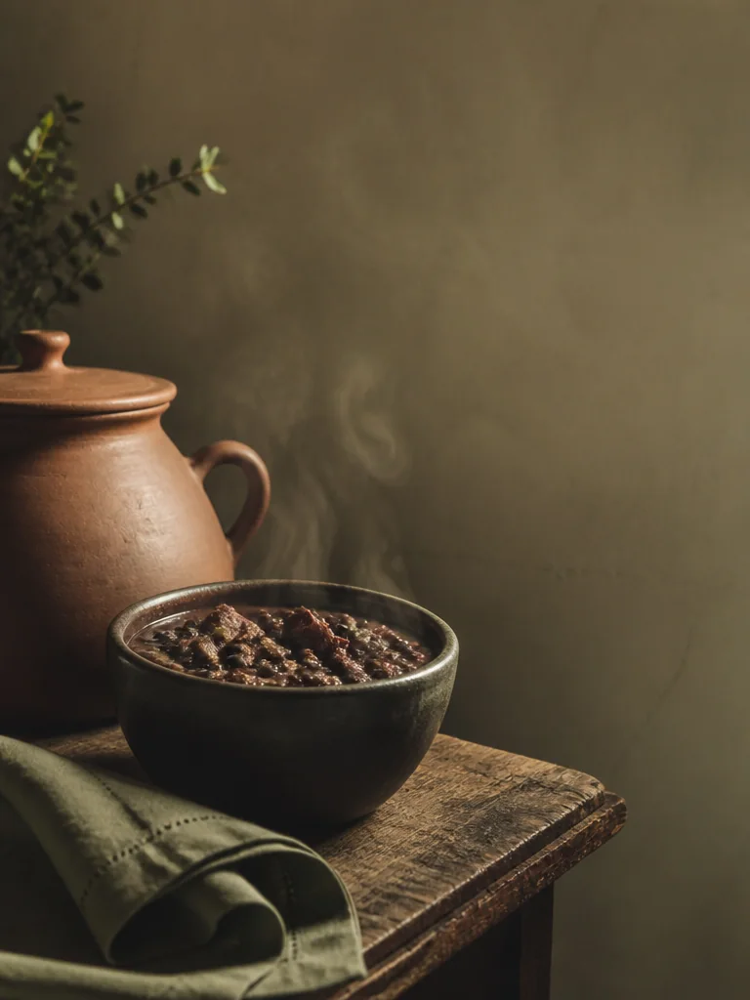
Prompt usado
Vertical photo of a still life: a steaming bowl of feijoada, a clay pot and a folded linen cloth on a rustic kitchen table in Minas Gerais. STYLE BLOCK: muted terracotta and sage palette, warm low side light from the left at 3500K, soft long shadows, matte textures, subject on the left third with plain wall as negative space on the right, 50mm lens at f/2.8, subtle 35mm film grain, calm and dignified documentary mood.
Três gerações independentes com assuntos completamente diferentes — uma rua em Recife, uma barbearia em Salvador, uma mesa em Minas — e o mesmo bloco de estilo colado no fim de cada prompt. Compare a direção da luz, a paleta e onde está o espaço vazio: é isso que faz três imagens soltas virarem uma série.
O bloco de estilo usado nas três imagens
STYLE BLOCK: muted terracotta and sage palette, warm low side light from the left at 3500K, soft long shadows, matte textures, subject on the left third with plain wall as negative space on the right, 50mm lens at f/2.8, subtle 35mm film grain, calm and dignified documentary mood.
6Passo 4 — Recriar e praticar: estudo não é cópia
O que é
Pintores copiam mestres em museus há séculos; músicos tiram músicas de ouvido. Recriar é treino, não plágio — desde que o que você leva da referência seja a receita, e não o prato. A linha que separa os dois é clara:
| Estudo (treino legítimo) | Cópia (plágio) | |
|---|---|---|
| O que você leva | decisões: tipo de luz, paleta, composição, textura, clima | a imagem: mesma pessoa, mesmo lugar, mesmos objetos, mesma pose |
| O que muda | assunto, pessoa, lugar, objetos | quase nada |
| Para que serve | entender como o estilo foi construído | parecer que você fez o que outro fez |
| Como publicar | “estudo a partir de uma referência de luz lateral dura” — com antes/depois se quiser | como se fosse obra original |
| Estilo de artista vivo | descreva a estética (época, luz, suporte), nunca o nome | “no estilo de [nome]” |
Por que aprender
Quando você tenta refazer uma imagem, descobre coisas que o olho sozinho não vê: que a luz vinha de mais alto do que parecia, que a paleta tinha só três cores, que o sujeito ocupava bem menos do quadro. Cada descoberta vira uma palavra nova no seu vocabulário.
Conceitos-chave em ação
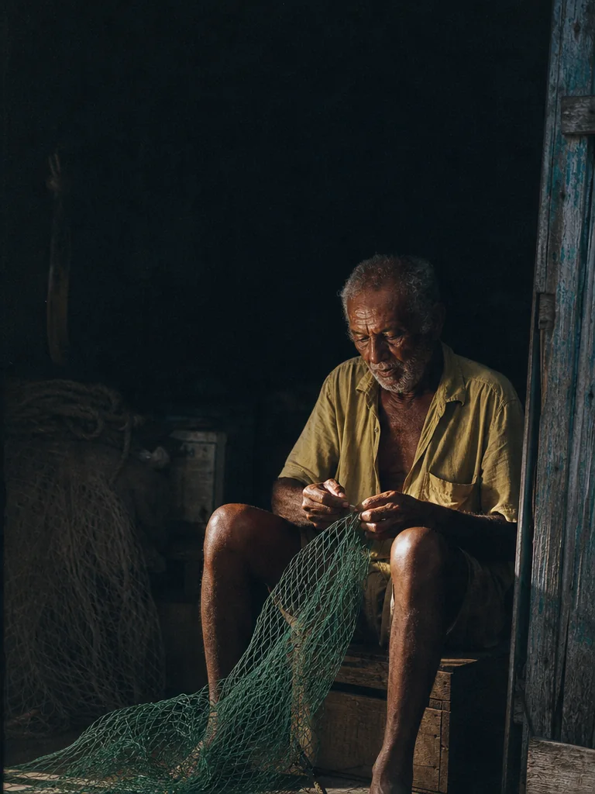
Prompt usado
Vertical portrait of an elderly Brazilian fisherman in his 70s with deep-brown weathered skin and a white stubble beard, wearing a faded yellow shirt, sitting on an overturned wooden crate in the doorway of a dark fishing hut in Alagoas, mending a green net across his knees. Single hard shaft of low sunlight entering from the right, striking only his face and hands, the rest falling into near-black shadow. Palette limited to deep teal shadows, warm skin tones and the net's green. Subject in the lower right, large dark negative space above. Shot on an 85mm lens at f/2.8. Grainy 1980s documentary film look, slightly lifted blacks. Mood: patience and solitude.
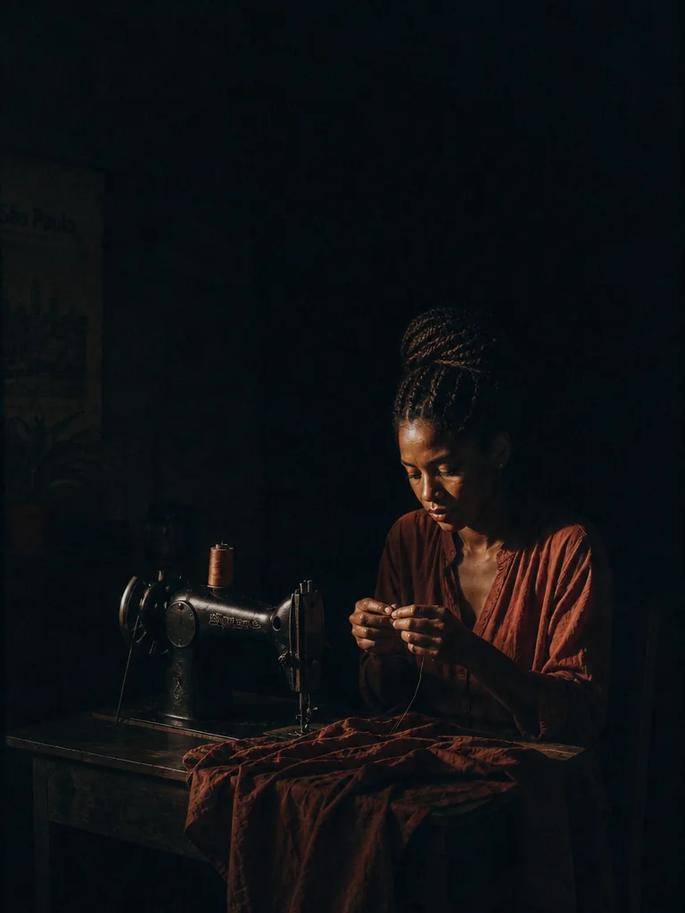
Instrução de edição usada (sobre a imagem-base)
Make a STUDY of this photograph, not a copy: keep only its recipe — the single hard shaft of low sunlight from the right that lights only the face and hands, the near-black surrounding shadow, the limited palette of deep teal shadows plus one warm accent, the subject in the lower right with large dark negative space above, the grainy 1980s documentary film look. Replace EVERYTHING else: the subject is now a young Brazilian seamstress in her 20s with dark skin and braided hair, wearing a rust-red blouse, sitting at an old black sewing machine in a small dim room in São Paulo, threading a needle. Different person, different place, different objects, same recipe.
À esquerda, a referência: pescador na porta escura de uma casa de pesca, um feixe de sol duro só no rosto e nas mãos. À direita, um estudo feito a partir dela: pessoa, lugar e objetos novos (uma costureira jovem numa máquina antiga), mas a mesma receita — luz dura lateral, sombra quase preta ao redor, sujeito embaixo à direita com vazio escuro em cima, grão de filme. Leve a receita, deixe o prato.
Micro-exercícios (escolha um por dia)
- Recrie uma referência do seu board com outro assunto (como acima).
- Cinco variações consistentes: mesmo bloco de estilo, cinco assuntos.
- Só a luz: gere uma imagem e depois edite mudando apenas a luz.
- Só o ângulo: mesma cena, três alturas de câmera.
- Pacote-assinatura: 3 a 6 imagens que poderiam abrir o mesmo perfil.
O objetivo da prática não é variedade. É controle.
7Imersão diária: o hábito de 15 minutos
O que é
O método dos quatro passos não é uma tarefa que se faz uma vez: é um ciclo. O motor que mantém o ciclo girando é a imersão — viver cercado de boas imagens e olhar para elas com perguntas. Duas atitudes aceleram tudo: seguir pelo menos 10 criadores com estética próxima da que você busca (fotógrafos, diretores de fotografia, ilustradores, diretores de arte) e transformar o feed numa máquina de aprender, não de distrair.
Por que aprender
Quinze minutos por dia dão mais de 90 horas de olho treinado por ano — mais do que muitos cursos inteiros. E, diferente de uma maratona de fim de semana, a prática diária deixa o cérebro processar entre uma sessão e outra. Diante de qualquer imagem que te pare, faça as três perguntas de diretor:
- Por que isto parece caro (ou verdadeiro, ou tenso)?
- O que exatamente está fazendo o trabalho aqui? (a luz? a cor? o vazio? o momento?)
- Qual decisão se repete nas outras imagens deste criador?
Conceitos-chave em ação
A rotina de 15 minutos
| Minutos | O que fazer | Vai para o caderno |
|---|---|---|
| 0–4 | Coletar: salvar 5 referências novas no board, com critério | as 5 imagens |
| 4–8 | Observar: escolher 1 delas e responder às três perguntas | 3 frases |
| 8–11 | Nomear: escrever 3 palavras visuais novas que ela ensinou | 3 palavras na biblioteca |
| 11–15 | Praticar: um micro-exercício (só a luz, só o ângulo, um estudo) | 1 imagem + o prompt exato |
Prática guiada: seu primeiro board, seus padrões e três imagens consistentes
Agora você roda o método inteiro uma vez, em versão curta. O objetivo é sair com um board de 20 a 30 referências, 2 a 4 padrões escritos, um bloco de estilo e três imagens que pareçam da mesma série.
Roteiro
- Escolha um tema amplo para o board (ex.: “comida de rua brasileira à noite”, “interiores com luz de janela”, “retratos de trabalhadores”).
- Colete 20–30 referências em 20 minutos, usando as três perguntas do Passo 1. Pelo menos um terço delas de fora do tema.
- Olhe o board inteiro e preencha o checklist de leitura (cor, luz, textura, composição, clima). Circule 2 a 4 padrões.
- Escreva a direção em uma linha e transforme-a num bloco de estilo em inglês (molde abaixo).
- Gere três imagens com assuntos diferentes e o mesmo bloco. Salve imagem + prompt exato.
- Coloque as três lado a lado. Se uma destoar, descubra qual camada escapou e reforce só ela.
Molde do bloco de estilo
Objetivo: Transformar os padrões do seu board num trecho reutilizável, trocando só o que está entre < >.
<Assunto: quem ou o quê, fazendo o quê, onde — uma frase concreta>. STYLE BLOCK: <paleta de 3-4 cores> palette, <fonte e direção da luz>, <qualidade: soft/hard> light at <temperatura>K, <textura dominante: matte / glossy / grainy>, <composição: posição do sujeito + espaço negativo>, <lente> lens at <abertura>, <acabamento: film grain / clean digital>, <clima em 2-3 palavras> mood.
Como verificar: Cada uma das três imagens mostra a mesma direção de luz, a mesma paleta e o mesmo tipo de espaço vazio? Se não, a palavra daquela camada está fraca ou ambígua — troque por uma mais concreta.
Exemplo pronto (para testar antes de escrever o seu)
Objetivo: Rodar um bloco já preenchido com um assunto novo e ver se ele segura a estética das imagens deste módulo.
Vertical photo of a woman selling tapioca from a small iron griddle at a street corner in Fortaleza, early evening, folding a tapioca with a spatula. STYLE BLOCK: muted terracotta and sage palette, warm low side light from the left at 3500K, soft long shadows, matte textures, subject on the left third with plain wall as negative space on the right, 50mm lens at f/2.8, subtle 35mm film grain, calm and dignified documentary mood.
Como verificar: A tapioqueira ficou no terço esquerdo com parede lisa à direita? A luz vem da esquerda, quente e baixa? Coloque ao lado das três imagens do tópico “Nomear”: parece a mesma série?
Estudo de recriação (receita, não prato)
Objetivo: Fazer um estudo a partir de uma referência do seu board sem copiá-la.
Make a STUDY of the attached reference, not a copy. Keep only its recipe: <tipo e direção da luz>, <paleta>, <posição do sujeito e espaço negativo>, <textura / acabamento>, <clima>. Replace everything else: the subject is now <outra pessoa ou objeto>, in <outro lugar>, doing <outra ação>. Different person, different place, different objects — same recipe.
Como verificar: Um amigo que visse as duas lado a lado diria “são parentes” e não “é a mesma foto”? Se a pessoa, o lugar ou a pose se parecem demais, troque mais elementos.
Lição de casa
Esta lição abre o seu caderno de olhar. Crie uma pasta ou um caderno com cinco seções: *Boards*, *Padrões*, *Palavras*, *Estudos* e *Regras*. Tudo o que você fizer aqui vai para lá — e será reaproveitado nos próximos módulos.
Nível básico (obrigatório)
- Monte um board com 20 a 30 referências em torno de um tema. Pelo menos 8 de fora do seu nicho.
- Identifique 2 a 4 padrões usando o checklist de leitura e escreva a direção em uma linha.
- Escreva 10 palavras estéticas que descrevem esse board (ex.: matte, raking light, terracotta, negative space, grain).
- Escreva um bloco de estilo e gere 3 imagens consistentes com assuntos diferentes. Salve cada prompt exato.
- Siga 10 criadores com estética próxima e anote, para cada um, uma decisão que ele repete.
Nível avançado (desafio)
- Recriação em três tempos: escolha uma referência do board, faça um estudo (receita, não prato) e depois 3 variações do estudo mudando uma variável por vez (luz, ângulo, momento). Monte um antes/depois com as cinco imagens e escreva, em 5 frases, o que você descobriu sobre como a referência foi construída.
- Comum × pensada com seu próprio assunto: gere uma cena do seu cotidiano sem decidir nada; depois faça quatro edições mudando só luz, só cor, só composição e só momento, e uma quinta com as quatro juntas. Anote qual decisão pesou mais.
Entregue/guarde: No caderno de olhar: o board (ou link), a página de padrões com a direção em uma linha, a lista de 10 palavras, as 3 imagens com seus prompts e a lista dos 10 criadores. Se fez o avançado, o antes/depois com a análise.
Teste sua decisão
1. Você gerou uma imagem muito bonita com o prompt “café da manhã aconchegante”. Pelo critério deste módulo, o que falta para ela demonstrar gosto?
Consultar a explicação
O modelo preenche o que você não decide com a média — e a média costuma ser bonita. Gosto é o que você escolheu e consegue repetir. Palavras de qualidade genéricas não tomam decisão nenhuma.
2. Qual destas atitudes é um estudo legítimo de uma foto que você admira?
Consultar a explicação
Estudo leva as decisões (a receita) e troca o conteúdo (o prato). Refazer a mesma imagem é cópia; usar o nome de um artista vivo é terceirizar o estilo dele em vez de entender como foi construído.
3. Seu board tem 40 imagens e você não consegue ver nenhum padrão. Qual é o melhor próximo passo?
Consultar a explicação
Board disperso esconde padrão. Cortar o que entrou “porque sim” e ler por camada faz as repetições aparecerem. Mais volume sem critério só aumenta o ruído.
Responder não marca a leitura nem bloqueia o próximo módulo.
O que levar desta aula
- Gosto é repertório + vocabulário + prática: um conjunto de decisões que você repete de propósito.
- O método tem quatro passos: coletar → encontrar padrões → nomear → recriar, girando em torno da imersão diária.
- Treine o olho mudando uma decisão por vez (luz, cor, composição, momento) sobre a mesma base.
- Um bloco de estilo fixo, colado em assuntos diferentes, é o que transforma imagens soltas em série.
- Recriar é treino quando você leva a receita e troca o prato; nunca use nomes de artistas vivos.
- 15 minutos por dia — 5 referências, 3 perguntas, 3 palavras, 1 exercício — valem mais que maratonas.